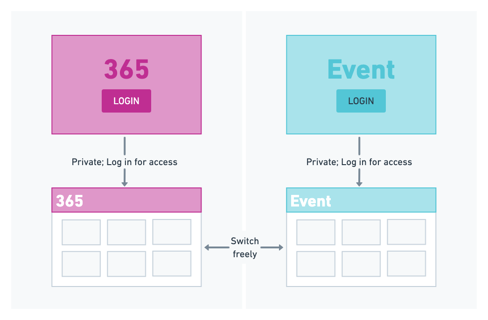
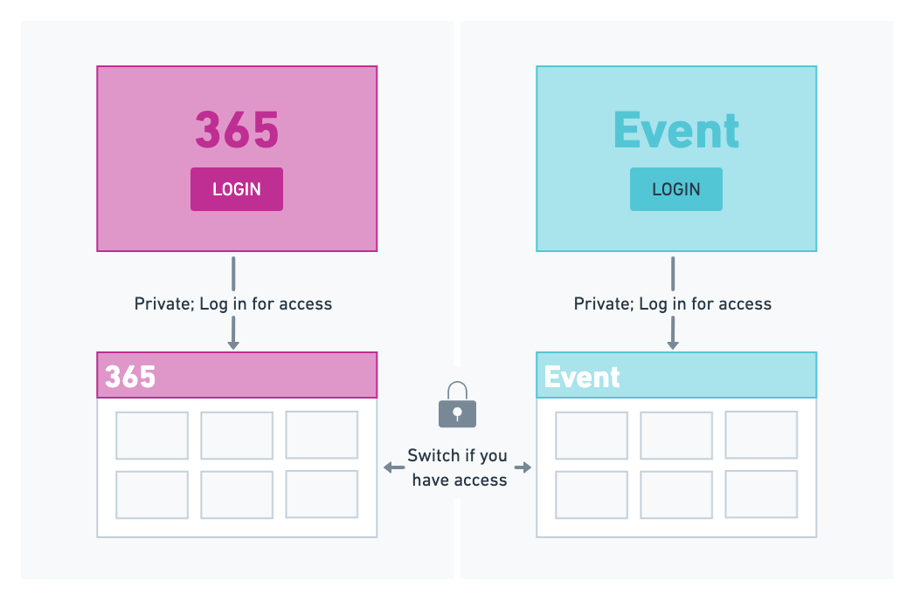
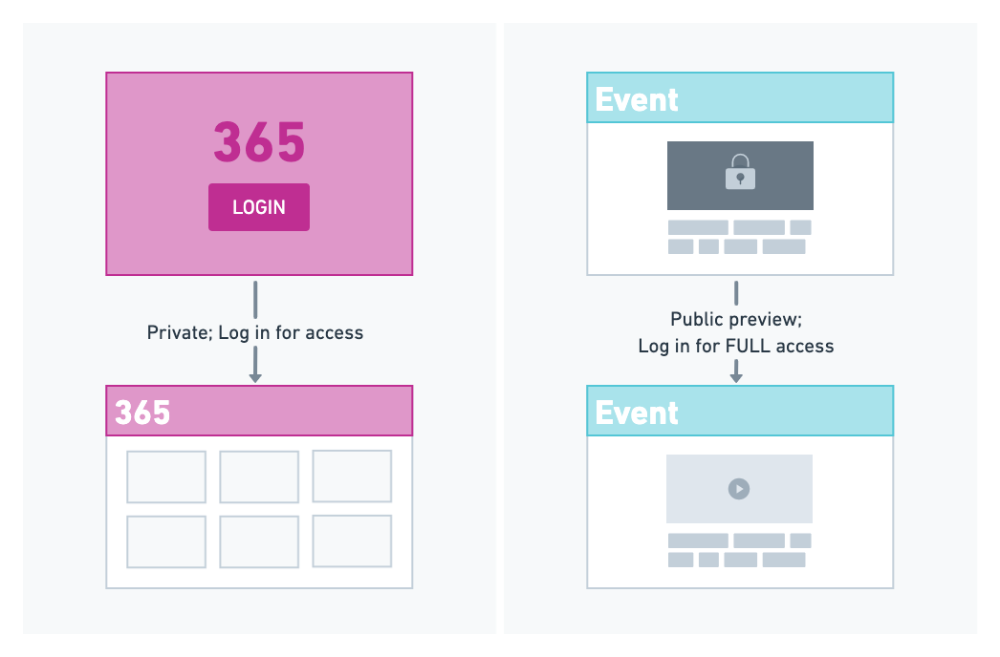
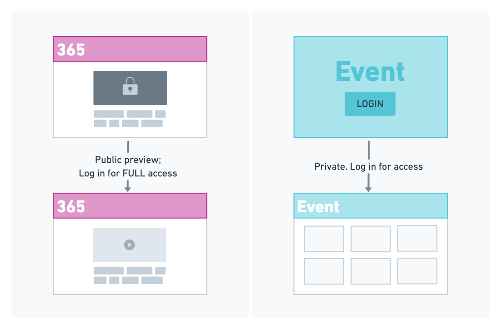
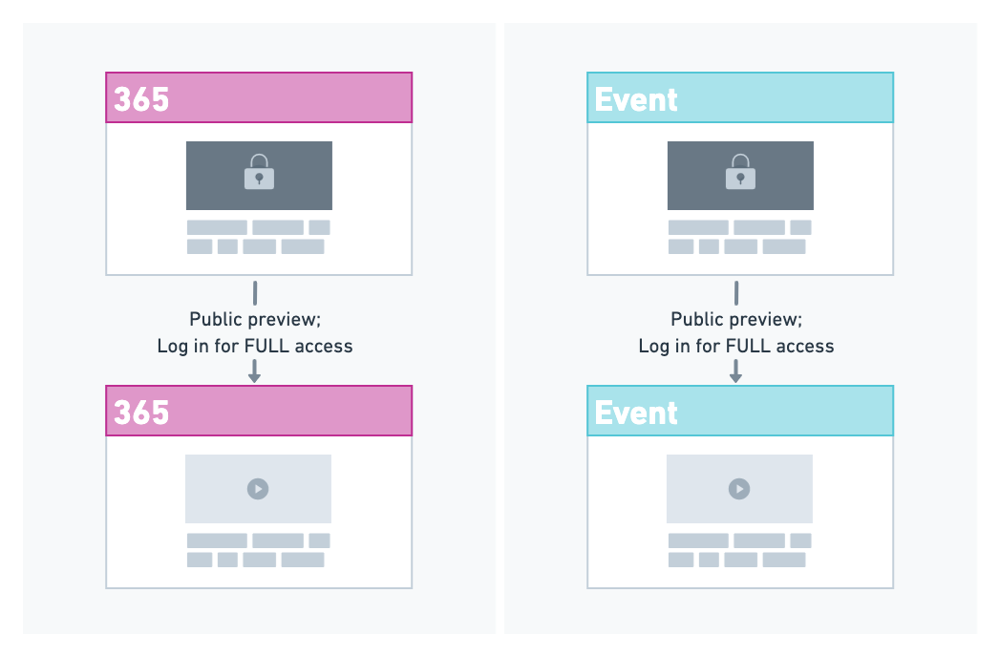

Plan a multi-site platform This document was originally published on help.junolive.com. This guide walks you through the decisions to make as you plan a multi-site JUNO platform. One platform, multiple sites Your JUNO experience can go beyond a single, static website. Instead, think of your JUNO Single Destination Platform as a home base for your events, users, content, and data. Everything is stored in one content management system. From there, we design and launch multiple sites to create many different user experiences. You might start your JUNO journey with a single live event before expanding to a multi-site platform. Or you might start with a single 365 site to engage your community year-round, then add more sites that host temporary events or communities. Or maybe you already have a multi-site strategy in mind. Either way, this guide will help you understand what’s possible. Ingredients for a multi-site platform When planning a new site, consider these decisions: Site type: 365 or Single-use Site-switching links Access type: public preview, private, and access levels URL customization Welcome page design User authentication Site content and configuration Site type: 365 or Single-use 365 sites are for year-round content and engagement. Think of your 365 site as the hub for your Single Destination Platform. Your community visits the site whenever they like, whether to find information, earn certifications, or connect with others. You can host gatherings that draw people to the site at scheduled times. Single-use sites are active for a limited time, such as for an event. Instead of breaking down your 365 site and rebuilding it for every event, we create fully configured sites for each event ahead of time. During the event, your 365 site stays active. Since multiple sites can be active at once, your Single Destination Platform can become a network of 365 and/or single-use sites. Next, you’ll learn how users navigate between sites and how to control user access. Site-switching links Site-switching links let users jump between different sites within your multi-site platform. Links can be in different locations on each site, but we recommend being consistent so that users know what to expect. Add links to: The More menu. This is the best way to make sure people can consistently find other sites. Modules. This is a great way to advertise another site. For example, create a banner ad or pull a piece of content (like a session) from another site. If you don’t want users to switch sites, you can remove the link. Or just hide it from users without the right access level. Once someone clicks a link, they are taken to the other site if they have access. Access is what you’ll learn about next! Access type: public preview, private, and access levels Control what users see before logging in by making your site either private or public preview. Then control what they see after logging in with access levels on content. To learn more, see our guide to each of these access types. For a multi-site platform, public preview and private sites can be combined in creative ways. In the following examples, imagine that you have a platform with two sites: a 365 site and a single-use site called “Event.” Private platform without site-switching restrictions All sites are private. A user must log in to see any content. Once they do, they can freely switch to another site. Any content, however, can still be locked with access level tags. This is the standard scenario for a JUNO platform.  Private platform with locked site switcher All sites are private. A user must log in to see any content. They can only switch sites if they have access to the other site. This scenario is most common when your private 365 site includes more users than are ticketed to a specific event. Non-ticketed users could not access the event site. Access is restricted by either: Hiding the site-switching link from users without access. In this case, they can’t switch at all. Locking all content on the other site with access level tags. In this case, logged-in users can preview the other site, but only open content if they have the correct access level.  Private 365 and public preview event A user must log in to the 365 site to see anything there. They may be given a direct link to preview the Event site without logging in. But if they try to interact with content on the Event site, they will be prompted to log in. This scenario is most common when the 365 site is a member-only benefit, while ticketed events are advertised to the general public (non-members). In this case, we often hide the site-switching link from non-members.  Public preview 365 and private event A user does not need to log in to preview the 365 site. But if they try to interact with content, they will be prompted to log in. They will also be prompted to log in when they try to switch sites because the Event site is private. This scenario is most common when the 365 site will be open for the general public to join open webinars or view basic content.  Public preview platform All sites allow public preview. A user does not need to log in to preview sites. But if they try to interact with content, they will be prompted to log in.  URL customization There are two important decisions to make for your URL. Domain: The first part of the URL is the name of your whole platform. We recommend using something universal like your organization’s name. For example, myplatform.junolive.co. Paths: Each site is identified by a path, which appears after the first /. Every time you create a new site, you will choose a path name. For example, myplatform.junolive.com/365 and myplatform.junolive.com/event are two sites under the same platform. To create your URL, see Brand options for all specifications. Welcome page design Every site can have a unique welcome page. For example, a special branded event can look different than your 365 site. However, there is a rule for page backgrounds. You can’t store multiple background videos in your platform’s content management system. This means that any site set to have a background video must use the same video. To create multiple unique backgrounds, use static images instead. User authentication To ensure a smooth JUNO experience, we strongly recommend choosing one way to authenticate users for the entire platform. Fewer interacting systems mean fewer unexpected complications! We understand that many organizations already have multiple authentication methods in place. For example, maybe your existing association members use SSO, while prospective members are invited to an event via registration. In this case, we recommend consolidating your registration into your SSO, if possible. Then, we will only need to integrate one database with JUNO. Learn more about the process of setting up integrations with JUNO. Site content and configuration All of your users, content, and data belong to one content management system. So, in order to make each of your sites unique, we have to pull specific content and configure different navigation, branding, and features. Check out these articles to start thinking about what will be the same and what will be different on each of your sites: Navigation options Brand options Choose and configure modules Configure pages and features Special configuration: Seasonal looks or brand campaigns You can plan configuration changes ahead of time. Want to decorate for the holidays? Or have a brand campaign on the way? A site can change its appearance or content throughout the year. We can set up one look ahead of time and let it automatically switch on a future date. Special configuration: Unique user views You can give users a unique view of a site. For example, site admins can have a different view than regular attendees during an event. Or control what people see before the event starts, while you’re still building the site. For example, give exhibitors a curated experience while they set up their suites. Or make a stripped-down experience for all attendees before the event. We configure these experiences by creating a duplicate version of a site with some configuration changes and a unique URL. Then we give users a direct link to the site. Or, if it’s just a matter of restricting specific pages, we use curtains to keep out users who shouldn’t have access.